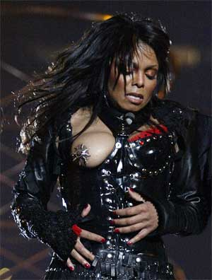

|

Curse Words For Janet Jackson
Daddy, why does that f--- politician hate women's breasts? Because he's a s-- and a hypocrite, honey.
- - - - - - - - - -
by Mark Morford
AWS WERE CLENCHED. Brows were furrowed. Scowls were scowled. Fake sanctimony was hissed. Pasty cellulitic butts were scrunched. This is what happened.
Just last week, well before Janet Jackson reignited her limp career in the most nipple-riffic PR stunt in months, uptight members of Congress from all corners squeezed their narrow ideologies into little fiery balls and decided to berate, as they so often do, radio and TV for being "vile, crude, disgusting, and awful," yo hey pot kettle black. And, lo, lightning did not strike them dead on the spot.
Why the outburst? Because Bono said the delicious f-word during the Golden Globes, and it wasn't edited out. Because a few of the country's crude 'n' obnoxious Clear Channel shock-radio stations you would never listen to because you have taste and a brain aired one of those vapid sexist gag radio bits called "Bubba the Love Sponge" that appeal only to semicatatonic homophobic frat boys.
Oh, and because S.F.'s own KRON-TV dared to accidentally flash a shot of a real penis during a segment about the very much not-all-that-funny "Puppetry of the Penis" theater show. Shocking. Appalling. Honey cover your eyes.
And thus did the sanctimonious pseudo-Christian cry go out, powerful and time tested by politicians worldwide, guaranteed to induce fear and ignorance and allow them to paint themselves as all self-righteous and ethical and pretend they're not a corporate shill raping the environment from the back pocket of an oil lobbyist: Who -- pray, who -- will protect the children?
So the politicos, they hissed, they derided, they wrapped themselves in cloaks of hypocrisy and righteousness and proposed a bill to quintuple the Federal Communication Commission's powers to punish "crude, vile" media violators -- i.e., anyone who broadcasts certain "forbidden" swear words or exposes genitalia or offers up crude schlock-radio pap, as if these are the true demons of society, the true leeches sucking the souls of the virtuous and the young. Wrong again, pols.
Which leads us, naturally, straight to Janet Jackson's nipple. To the instantly infamous and fully intentional breast-exposing PR stunt wherein Justin Timberlake "accidentally" ripped off one of Janet's breast plates, exposing one quite cool silver sunburst nipple shield, just before a panicky CBS cut to a much more morally virtuous Pepsi commercial.
Once again, America was shocked and appalled. Families were horrified. Civilizations trembled. Churches crumbled. Upwards of 89 million viewers gasped and made the sign of the cross and realized just how desperate Janet's career must've been that she had to try to pull that one off. So to speak.
And oh yes, children were traumatized, too. Deeply scarred. Forever and ever. So very sad.
Because children are always traumatized by such events, aren't they? The wee ones simply can't handle sex and nudity and swearing and it's a wonder the damn little things can get out of bed in the morning, what with all the f-words and exposed nipples and penises flopping around out there. Right, senator? The poor dears. Thank god for Spongebob.
So outraged was the populace that Michael Powell, sanctimonious head of the FCC, he of the flagrant corporate whoring who recently tried to cram through new rules that would've allowed a handful of media giants to own almost every media outlet in the nation, is actually launching a probe into the Janet episode. How cute.
This is the message: A woman's bare breast is a horrific and disturbing thing, completely inappropriate for an afternoon of wholesome macho homoerotic skull-bashing NFL violence and endless hours of nauseating commercial crassness -- unless the woman is, you know, a cheerleader. Now rush off to bed kids, and read your Bibles while Mommy and Daddy pop some Zoloft and Levitra and crack a few Bud Lights and head off to the fetish dungeon to lick our new Ford GT. Got it.
Yes, a woman's flesh is unspeakable evil. However, umpteen erectile-dysfunction commercials and crotch-biting pisswater Bud Light commercials and toxic-junk-food commercials and faux-macho truck commercials and the ad featuring two old people beating each other up over a bag of greasy potato chips, why, that's just tasteful, healthy capitalism. Is that it, Mike? Politicians? Just want to be clear.
Because there is no outcry. There are no snide FCC honchos or uptight politicians hurling the terms "vile," "disgusting" and "crude" at the true poisons of the culture, like those above -- not to mention politicians' own oil cronyism or easy lies about war, or the decimation of our foreign policy. You want to talk vile and disgusting, senator? Have you seen the new BushCo budget?
Most telling side note: Bono, of U2, was barred from performing a song about AIDS awareness at the Super Bowl because he is "too political," given how he fights for those horrible un-American causes of peace and Third World debt relief.
But pseudo-gangsta P. Diddy can pimp like a talentless thug and Kid Rock can, well, be Kid Rock and NFL players can kneel in smarmy bogus prayer rituals, praying fervently to crush the other team's vertebrae and win a shiny trophy. My God but we are so beautifully, deeply screwed.
Mind, this is no impassioned defense of vulgar radio or tacky overblown halftime stunts, which are, by American tradition, inane and insulting on 157 levels. After all, a nation gets exactly the type of schlock entertainment it deserves. And, as for the children, well, if you let your 5-year-old listen to Howard Stern, you get exactly the kind of kid you deserve, too.
But in the final analysis, which is more harmful to your innocent unsoiled perfect child? Hearing Bono say "this is really f--ing brilliant" during the Golden Globes and ogling Janet Jackson's PR-happy breast for all of 1.7 seconds, or the endless stream of blood-soaked images of BushCo's bogus war machine interspersed with never-ending commercials featuring misogyny, bestiality, cheap beer and toxic sodas, along with arrays of pneumatic bleached-toothed cheerleaders doing the splits while sweaty 300-pound men in tights pulverize each other like gorillas on meth?
Verily, congressman, and truly, Mr. Powell, why are you not out there screaming and clenching your fists and protecting our innocent children from the endless array of sociocultural lies and abuses and corporate whorings you yourselves support and help perpetuate?
Why are you not, in short, ranting about the need to protect our children from the likes of, well, you?
Reprinted from SFGate.com

|